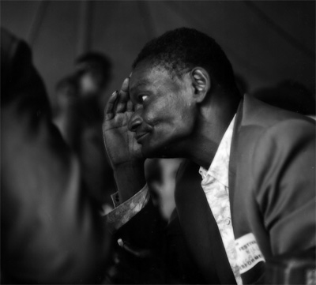
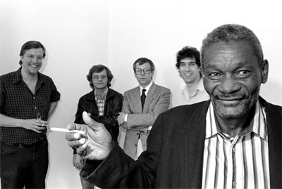

Lazy Bill Lucas 29 мая в 1918 году родился Lazy Bill Lucas – блюзовый пианист и гитарист. Играл в Чикаго в 40х, 50х и начале 60х, а затем переехал в Миннеаполис, штат Миннесота, где и стал важной частью блюзовой историиРодился в семье издольщиков в Винн, штат Арканзас. В поисках лучшей жизни, семья Лукаса направилась на север в Южную Миссури, затем в Сент Луис в 1940м и через год – в Чикаго. В молодости Лукас пел на улицах Адванса(Миссури), в основном для белой аудитории, предпочитающих песни хиллбилли, но в Сент Луисе он стал выступать для черных, в дуэте с Big Joe Williams До 1946 года, Лукас играл на гитаре на улицах, часто аккомпанируя Sonny Boy Williamson II. Чуть позже в этом же году, Лукас собирает трио с Willie Mabon и Earl Dranes. Вступив в Американскую Федерацию Музыкантов, они получили возможность две недели выступать в Tuxedo Lounge. А следующие несколько лет, Лукас играл в различных составах по клубам, барам и на улице. В этот период он играл с Johnny "Man" Young, Jo Jo Williams, Homesick James, Little Hudson, Snooky Pryor и Little Walter. В 1950, Лукас переключился с гитары на пианино и работал сайдмэном в нескольких блюзовых группах, а также появился на записях Blue Rockers, Willie Foster, Homesick James and Snooky Pryor В 1953, возглавляя трио Lazy Bill and the Blue Rhythm, он добился контракта на звукозапись для Chance Records. После одной сессии записи, компания выпустила пластинку на 78 оборотов с песнями "She Got Me Walkin" и "I Had a Dream". 50е шли, а работу стало всё труднее находить. В течении 60х, Лукас пытался попасть на фолк-блюз сцену, но не смог получить ни одного контракта. С 1964 года и в 70х, Лукас играл в нескольких группах, возглавляемых George "Mojo" Buford и одновременно выступал соло или со своими небольшими составами. В 1970 он играл на заметном шоу в Guthrie Theatre, которое организовало Миннеаполиское учреждение черных, для показа широты и исторической значимости афро-американской музыки. В том же году, Лукас появился на фестивале Wisconsin Delta Blues и Ann Arbor Blues Festival вместе с Jeff Titon и John Schrag. В 1970 Titon помог с записью и продюсированием материала Лукаса для Philo Records. В 1979 Лукас,(который уже имел опыт игры на радио в 60х), появился на радио KFAI с своей постоянной программой - The Lazy Bill Lucas Show. Лукас скончался в Миннеаполисе в декабре 1982 года в возрасте 64 лет. Перевод © Александр Сомов Альбьм "Lazy Bill Lucas - 1974" могжно послушать или скачать на странице BluesTime Воронеж. Blues & Jazz.  |